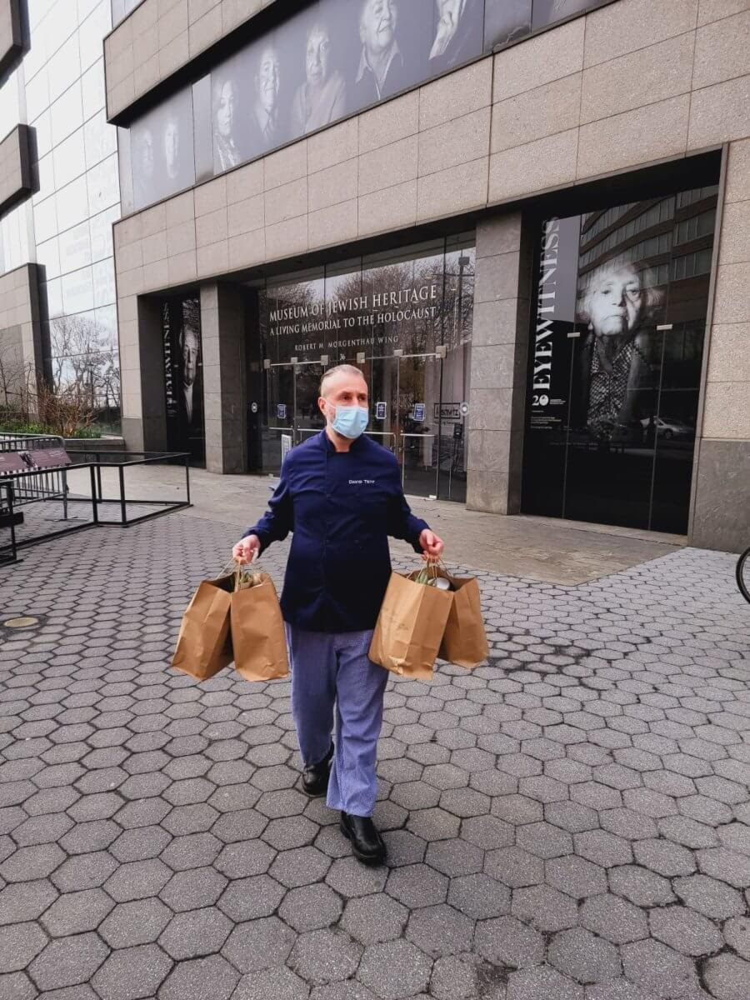
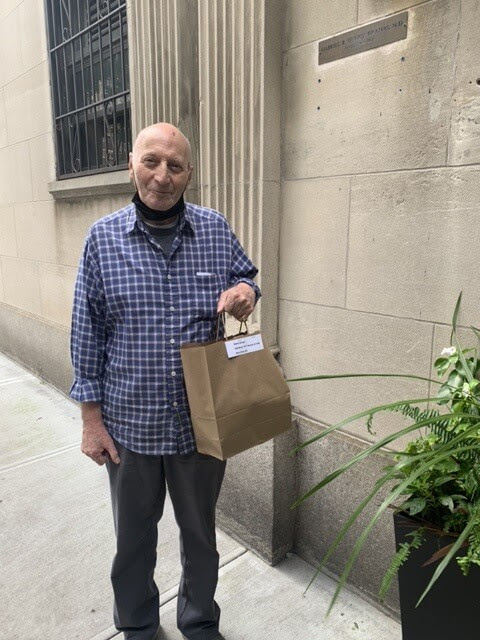

Blog Summary
When the pandemic hit in 2020, chef David Teyf worried what Holocaust survivors would do for Sabbath meals or Jewish holidays. Knowing people were shuttered home, he stepped up to the plate and decided to start delivering meals to them working with the Jewish Heritage Museum.
When the pandemic hit in 2020, chef David Teyf worried what Holocaust survivors would do for Sabbath meals or Jewish holidays. Knowing people were shuttered home, he stepped up to the plate and decided to start delivering meals to them working with the Jewish Heritage Museum.
Teyf, who is the executive chef at the Museum of Jewish Heritage and the owner of the event planning company Madison Park, had both sets of grandparents, Abraham and Lifah Davidovich and Tesha and Esther Teyf, survive the Holocaust.
“Who was taking care of the survivors?” he said. “I was very concerned.”
While the pandemic began to cripple the restaurant industry, The Blue Card, a nonprofit that helps Holocaust survivors, reached out to Teyf to collaborate in providing food to their member survivors living throughout the five boroughs, New Jersey and Connecticut, upon learning of his efforts with the Jewish Heritage Museum.
“I visualized my grandparents smiling down on me and I knew this was something I had to do,” Teyf said.
He began delivering meals around April 2020 for Passover and continued every Shabbat and major holiday into this year, including Rosh Hashanah and Yom Kippur. In fact, this month alone he brought 560 meals to survivors.
In total, about 80 survivors receive food from Teyf each week and the menu always features nutritious food, fruits and vegetables.
“I am so grateful to The Blue Card for thinking of me during this challenging time and for sending me weekly Shabbat food packages, as well as this special one in honor of Rosh Hashanah,” said Robert a survivor in Manhattan. “During this time, this beautiful care package makes me feel part of the Jewish community, and able to celebrate Rosh Hashanah fully, even if I might not be able to gather with others physically.”
According to Teyf, it was bit awkward delivering the food at first because many people were afraid to even open the door. However, as time wore on, they began to feel more comfortable and express their gratitude.
“Shabbat can be a lonely time, particularly during the pandemic,” said Galina G., a Holocaust survivor from the Bronx. “It’s such a joy to receive these special Shabbat and holiday meals from The Blue Card and Lox Cafe each Friday now. It brings a great deal of light and joy into my week.”
Teyf told the Bronx Times he plans to continue bringing meals even after the pandemic ends. It’s very rewarding and to know that he is helping the most vulnerable population means a lot, he said.
“To me, it’s nice when they’re smiling and literally giving me a blessing,” Teyf said. “They already faced hunger. They should not be in that position again.”
The Blue Card ensures Holocaust survivors in need are cared for, financially and otherwise. To this end, The Blue Card has distributed over $46 million to date directly to Holocaust survivors. In addition, during this time as well as during every Shabbat, The Blue Card distributes food to survivors, to ensure that although they may not physically be able to gather that they still feel a part of the community observing and celebrating this special time. In September, working with some of the best chefs across the country including Teyf, it provided 2,500 meals in honor of the holidays to Holocaust survivors in 35 states, and personally distributed meals to 250 Holocaust survivors.

